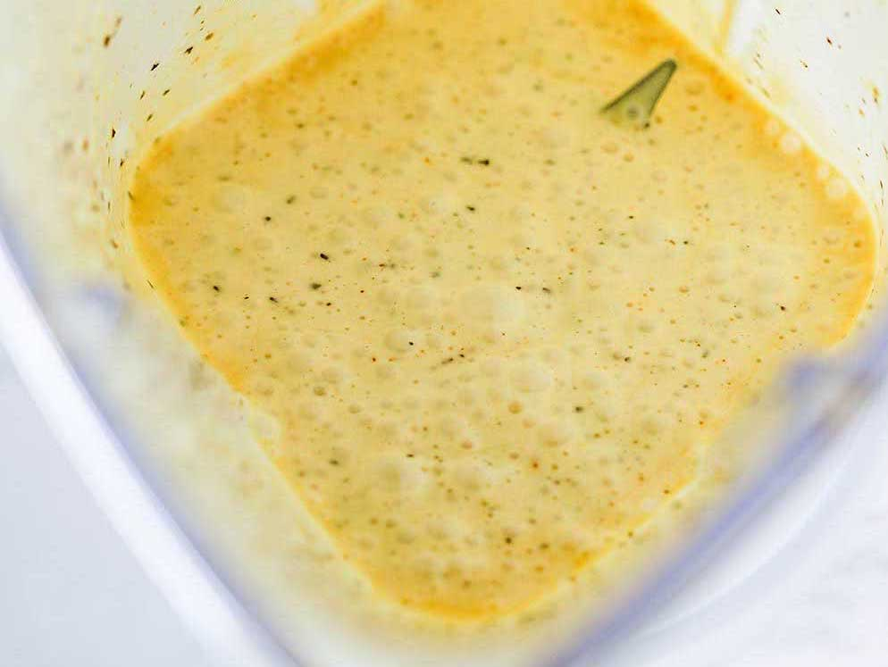
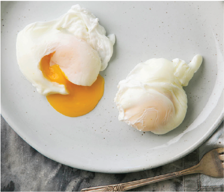
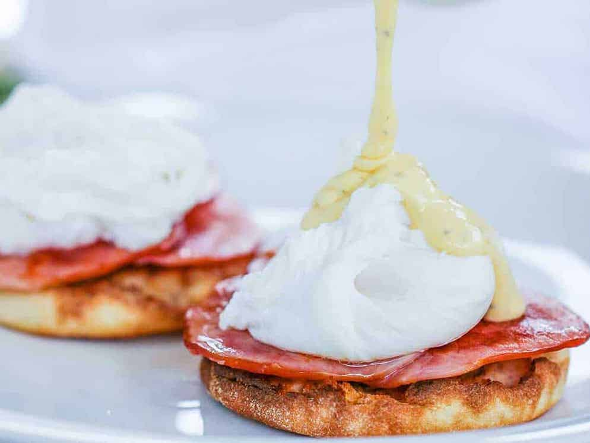

Classic Eggs Benedict. Is there a more perfect brunch dish than this iconic dish? We think not. And what is truly amazing about this incredible dish is how easy it is to prepare at home.
3/4 cup (1 1/2 sticks) unsalted butter 3 large egg yolks 1 1/2 teaspoons fresh lemon juice 1/4 teaspoon cayenne or hot paprika Kosher salt and freshly ground pepper
1 tablespoon white distilled vinegar Kosher salt 8 large eggs
4 English muffins, split 8 slices Canadian bacon or thick-cut ham 2 tablespoons unsalted butter 1/4 cup chopped chives 2 tablespoons chopped dill, tarragon or parsley Flaky sea salt Coarsely ground black pepper
1
2
3
4
5
6
7
Make the hollandaise: Melt butter in a small pot over medium heat until it’s foamy but not yet beginning to brown, 3 to 4 minutes.
Place egg yolks and 2 teaspoons water in a blender. Start blending, and, working very slowly, add the hot, melted butter until it’s all incorporated. (If it starts to get too thick to blend, add 1/2 teaspoon of water.) Add lemon juice and cayenne, though feel free to adjust the amounts to taste, and season with salt and pepper. Transfer the hollandaise to a small bowl, and place plastic wrap directly on the surface so it doesn’t form a skin. Set aside. (It will keep at room temperature while you work.)
Poach the eggs: Fill a medium pot with 3 inches of water. Add vinegar, season with salt and bring to a simmer. (Look for just a few bubbles; it should never boil.) Using the handle of a spoon or spatula, stir the water with a clockwise motion. Gently crack an egg into the center of the pot, letting the water swirl around it and allowing the white to envelop the yolk. Repeat with remaining eggs — you could probably do up to four at a time. Check the eggs after 4 minutes: Use a slotted spoon to lift an egg out of the water, and feel the white for firmness. Let cook until the whites are just set, but the yolks are still completely runny, 4 to 5 minutes. Once eggs are perfectly poached, remove from the water, and let drain on a plate lined with paper towels or a clean kitchen towel. Set eggs aside.
Using a toaster, toaster oven or regular oven, toast the English muffins until crisp and golden brown. Don’t be afraid to toast them thoroughly: They'll be covered in hollandaise and poached eggs, and will need to be sturdy.
Cook Canadian bacon or ham (or bacon) in a medium skillet over medium–high heat until golden brown and just crisp at the edges, about 6 minutes.
Assemble the Benedict: Place eight halves of English muffin on a plate and butter them generously. Top each with a slice of Canadian bacon, ham or bacon, then a poached egg. Spoon hollandaise sauce over and sprinkle with chives, dill, flaky sea salt and black pepper.
Serve at once!